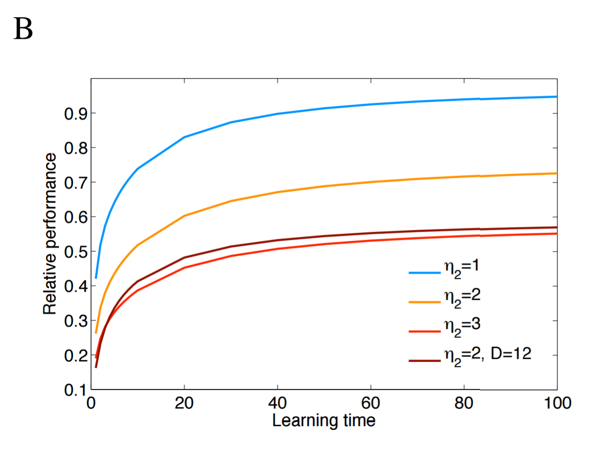
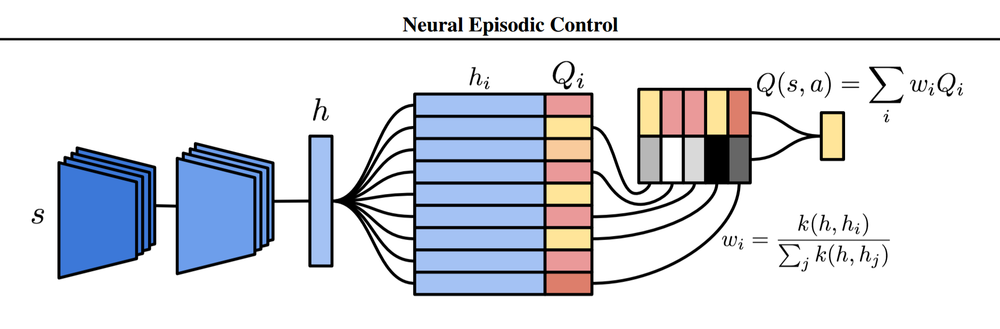
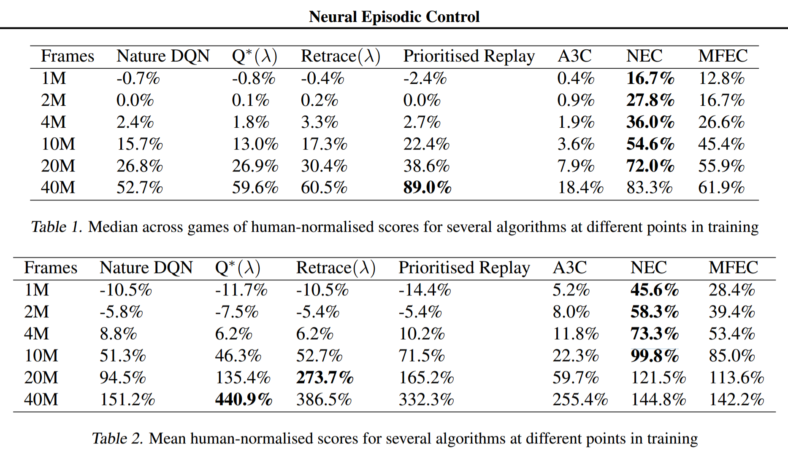
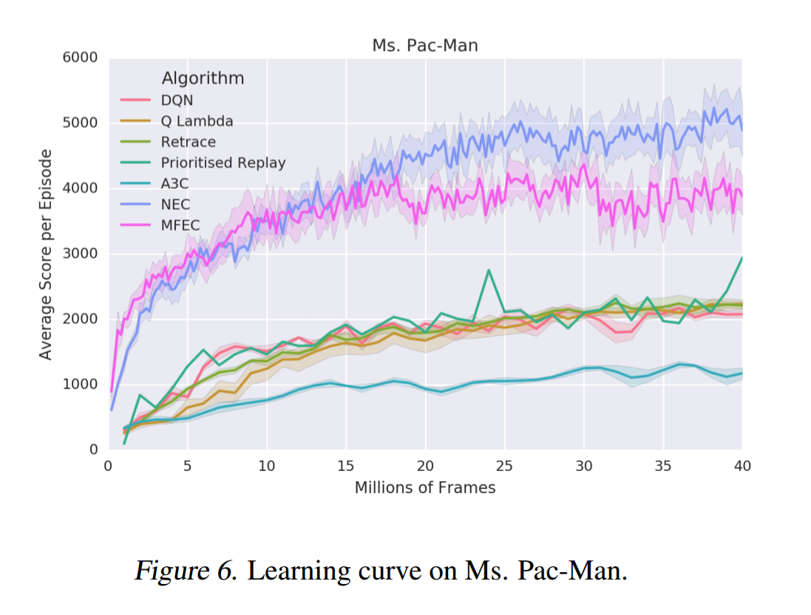

I've found that the overwhelming majority of online information on artificial intelligence research falls into one of two categories: the first is aimed at explaining advances to lay audiences, and the second is aimed at explaining advances to other researchers. I haven't found a good resource for people with a technical background who are unfamiliar with the more advanced concepts and are looking for someone to fill them in. This is my attempt to bridge that gap, by providing approachable yet (relatively) detailed explanations. In this post, I explain the titular paper - Neural Episodic Control.
Motivation
One of the current limitations of deep learning is the need for tremendous amounts of data. To give you a rough sense of just how much data are required, consider how much training DeepMind's DQN required to surpass human performance at a number of Atari games: as Lake et al. write, "The DQN was trained on 200 million frames from each of the games, which equates to approximately 924 hours of game time (about 38 days), or almost 500 times as much experience as the human received. Additionally, the DQN incorporates experience replay, where each of these frames is replayed approximately 8 more times on average over the course of learning."
Finding techniques to achieve state-of-the-art performance on tasks with orders of magnitude less data is a very active research area, and it is in this pursuit that Neural Episodic Control makes its contribution. However, I think that truly understanding this paper requires starting our voyage in the domain of computational neuroscience. Our starting point might seem distant from our goal, but I promise the path will be educational and richly rewarding.
Background
Paper #1 - Hippocampal Contributions to Control (2007)
In 2007, Lengyel and Dayan raised a question - why is having an episodic memory useful?
If you're a computer scientist like me, you might not immediately understand the question or its significance. Let's start with a quick overview of how human memory systems are structured.

Humans have two types of long-term memory: explicit (declarative) memory and implicit (procedural) memory. Explicit memory stores the recollections that you can intentionally bring to the front of your mind, and is further divided into two subcategories: episodic memory and semantic memory. Episodic memory contains specific personal experiences, including people, places, emotions, communicative exchanges - I like to think of episodic memory as little video clips that you can play in your head. This differs from semantic memory, which contains generalized understanding, such as knowing all the words to Bohemian Rhapsody or that human activity is a substantial causal factor towards climate change. Put another way, the question is asking, "Why do we remember specific memories in addition to remembering generalizable information?"
Lengyel and Dayan hypothesize that for agents trying to maximize long-term rewards in sequential decision-making problems, there's a tradeoff to be had: semantic memory makes better use of experiences (i.e. more efficient), but episodic memory requires fewer experiences (i.e. more accurate). They suggest that the two explicit memory systems exist because the systems supplement the other's deficiency; episodic memory can select good actions when data are scarce, and semantic memory can generalize well once more data have been collected.
To analyze this tradeoff, Lengyel and Dayan perform theoretical analysis on tree-structured Markov Decision Process (tMDPs). As the name implies, a tMDP is just a Markov Decision Process (MDP) without cycles. I couldn't find a simple picture of a tMDP, so I'm going to use the paper's psychadelic picture. In the below example tMDP, the agent takes two actions to complete an episode. The agent starts on the left, chooses one of four possible actions, and is then blown to a second state based on the transition probabilities, where the agent again chooses one of four possible actions and is then given a reward. Each terminal state gives a reward generated by a Gaussian distribution, each with equal variance. We could succinctly describe this tMDP as having depth = 2, branching factor = 3 and number of actions = 4. The transition function and the reward function are both probabilistic.

tMDPs are advantageous because they're more analytically tractable than MDPs and they're almost equivalent - think of a tMDP as a MDP unfolded in time. What the authors wanted to find out is how the performance of an episodic memory and a semantic memory compare as a function of environment complexity and amount of data. To do this, the authors created three agents (or controllers, as they call them):
- Model-based controller without computational noise (theoretical upper limit on performance in a given environment)
- Model-based controller with computational noise (semantic memory)
- Model-free episodic controller (episodic memory)
The two model-based controllers select actions by constructing probability distributions for states and actions and then choosing actions from those distributions. The first agent exists to determine the upper limit on performance by giving the agent perfect knowledge of the environment (i.e. the agent has seen an infinite number of episodes). In contrast, the episodic agent selects actions by remembering which action for the current state led to the best outcome observed thus far.
Lengyel and Dayan publish two key results. First, as the complexity of the environment increases, the model-based controller (i.e. the semantic agent) requires more data to perform as well, as show below. Here, "learning time" is defined as the number of times every state-action pair has been sampled, and $\eta_2$ represents the variance of the rewards; intuitively, as the variance of each terminal states' reward distribution increases, more data is required to determine which reward is better. Performance is relative to the perfect agent.
Second, an episodic agent outperforms the semantic agent when data are limited, and the episodic agent holds its competitive edge for longer in more complex and more noisy environments. The following three images show the two agents' performance as the branching factor of the environment increase from 2 to 4.


Paper #2 - Model-Free Episodic Control (2016)
Lengyel and Dayan's results are significant because they suggest how human brains might find good solutions without requiring millions of examples first. DeepMind sought to test Lengyel and Dayan's insight by creating a more sophisticated version of the episodic agent, called a Model-Free Episodic Controller (MFEC), and then observing how the algorithm performs in more challenging environments.
Like the episodic controller, a MFEC agent maintains a tabular record of good state-action pairs. In this case, the record is a growing table $Q^{EC}$, which is indexed by states and actions; each entry contains the highest reward ever received by taking action $a$ in state $s$. To mimic limits on memory retention, the table acts like a LRU cache, ejecting the oldest state-action pairs when it exceeds its storage capacity. The agent uses this table to choose an action $a_t$ from state $s_t$ by greedily selecting action $a_t = \argmax\limits_a Q^{EC}(s_t, a)$. At the end of the episode, every state-action-reward tuple, $Q^{EC}(s_t, a_t)$ is updated as follows:
However, agents using tabular methods as described like $Q^{EC}$ have no way to intelligently choose actions in newly encountered states. The authors point out that this shortcoming can be overcome by assuming the state space $\mathcal{S}$ has a distance function; if it does, k-nearest-neighbors can be used to choose actions by considering the best actions in similar states. Formally, we can generalize action selection to newly seen states by using a modified version of $Q^{EC}$:
Before testing an MFEC agent, the authors needed to take one additional step. Prior work demonstrated that the hippocampus, the brain region largely responsible for episodic memory, doesn't operates on sensory data directly, but rather a representation of that data as output from the ventral stream. Similarly, rather than allowing the agent to directly observe the environment, the authors tried using two types of representations (also known as feature mappings) $\phi$. Thus, for observation $o_t$, the agent's state $s_t = \phi(o_t)$.
The authors tried two different feature mappings. The first mapping is a random projection of the original observation into a smaller dimensional space (Model-Free Episodic Controller Random Projection, or MFEC-RP for short). This is accomplished using the Johnson-Lindenstrauss lemma (TODO: maybe add an explanation?), which states that for a random matrix $\mathbf{A}$ with entries drawn from a standard Gaussian, a transformation $\phi : o \rightarrow \mathbf{A} o$ will approximately preserve relative distances in the original space. The second mapping uses a variational autoencoder (Model-Free Episodic Controller Variational Autoencoder, or MFEC-VAE for short). (TODO: Add or link explanation of VAE)
The two flavors of MFEC were tested on five Atari-2600 games, and on three tasks (Forage, Forage & Avoid, Double T-Maze) in a first-person 3-D environment called Labyrinth. The results are below, and the results are quite clear: MFEC agents outperform previous champions DQN, Prioritized DQN and A3C in limited-data domains (usually < 20 million frames).

Intuition
Neural Episodic Control begins by recapping why MFEC outperforms DQN and A3C. Three reasons are offered:
- Stochastic gradient descent requires small learning rates to converge
- Environments with sparse reward signals cause neural networks to poorly predict rewards
- Reward propagation techniques like Q-learning slow the spread of reward signal
The paper introduces an improved version of MFEC called Neural Episodic Control (NEC). The goal is to make an algorithm that is entirely differentiable, and thus end-to-end trainable by gradient descent. To accomplish this, two modifications are made to MFEC. First, rather than using variational autoencoders or a random projection, Pritzel et al. use a convolutional neural network (CNN) that can learn an embedding well suited for selecting actions. Second, they replace the $Q^{EC}$ table with a more sophisticated alternative called Differentiable Neural Dictionaries (DNDs). DNDs are basically differentiable associative arrays.
Mathematics
Differential Neural Dictionaries
Like a Python dictionary or Java HashMap, a DND is composed of keys $K_a$ and corresponding values $V_a$ and has two operations: lookup and write. NEC uses one DND for each action $a \in \mathcal{A}$, hence why $K_a$ and $V_a$ are indexed by $a$. The paper uses $h$ to denote a key because $k$ will later be used to refer to a kernel function (more on that later). To find the output value $o$ corresponding to key $h$, the DND makes use of a distance metric like $Q^{EC}$, but in a more sophisticated manner. The output $o$ will be a weighted sum of values in the DND, where the weighting coefficients are determined by the similarity of $h$ to the keys in the DND. Specifically, for queried key $h$ and for each key-value pair $(h_i, v_i)$ currently in the DND:
The output $o$ is then a linear combination of the values multiplied by their corresponding weights:
In the lookup illustration below, the CNN produces some state representation $s$, which is the blue vertical bar on the left. That state $s$ is then compared against other states already in the DND, which is the two-column table in the middle. My best guess is that the illustrator is implicitly considering only the 5 nearest neighbors, and is representing the scalar weights using greyscale; the weights are then multipled by the values and subsequently summed to produce the output.

To make queries scalable, the output of a lookup will be based on the key's p-nearest neighbors, and kd-trees are used to approximate nearest neighbors. The authors choose a kernel based on the reciprocal of L2 distance. A constant $\delta$ is added to the denominator that (apart from making the function continuous when $h$ equals $h_i$) makes the tails heavier, so weight isn't overwhelmingly allocated to the nearest neighbor when all neighbors are far away.
Once a key is queried from a DND, that key and its corresponding output are appended to the DND, or, if the key already exists in the DND, the previous value is overwritten with the output.

Remember, a DND exists for each action $a \in \mathcal{A}$. Keeping that in mind, the image below shows NEC using one DND; for environments with more than one available action, the output of the CNN would be fed in as input to multiple DNDs and the NEC agent would select the action corresponding to the DND that produces the highest $Q(s,a)$ value.
Thus far, I haven't mentioned what values are stored in the NEC agent's DNDs. This isn't particularly novel, but I suppose it bears mentioning. The authors use N-step Q-learning as in Minh et al.. The N-step Q-value estimate is:
Experiments and Results
NEC was compared against A3C, DQN and MFEC as well as Prioritized Replay and two algorithms that incorporate $\lambda$-returns ($Q^*(\lambda)$ and Retrace$(\lambda)$) on 57 Atari games. Prioritized Replay, as the name implies, replays significant transitions more frequently and is therefore more data efficient. $\lambda$-returns are also more data efficient as they allow faster propagation of credit assignments. As the table below shows, NEC is king of the low data regime.
One advantage that MFEC and NEC both hold over the other algorithms is that they do not require rewards to be clipped to the range [-1, 1] for training stability. In environments where rewards can vary significantly in magnitude, unlike the other algorithms, NEC and MFEC are able to learn the difference between large and small rewards. The paper gives the example of Ms. Pac-Man: players can earn small rewards by eating dots, but they can also earn huge rewards by eating the ghosts.
Recalling that DQN took 924 hours to learn from 200 million frames of an Atari game, NEC met or surpassed human performance on roughly 25% of the Atari games within 10 million frames - just over 46 hours, or two days.

Discussion
Missing Controls
Unfortunately, the authors don't compare NEC to MFEC augmented with DNDs instead of $Q^{EC}$, so ambiguity surrounds how much of NEC's improved performance is due to a superior memory architecture as opposed to an improved representation as learned by the CNN. To compare $Q^{EC}$ against DNDs, the authors could have fed a random projection-based or VAE-based state representation into the DNDs, and trained from the DNDs onward. Similarly, the authors don't compare NEC to MFEC augmented with its own CNN, but as for how that might work, I'm not sure, as training the CNN is only possible if the tabular memory is differentiable and $Q^{EC}$ is not.
Complementary Learning Systems
Kumaran, Hassabis and McClelland note the similarities between animals replaying episodic memories while sleeping and training on replayed experiences in DQN (TODO: fully flesh this out).
Summary
- Deep learning is currently hindered by the amount of data necessary to perform well
- Computational neuroscience research suggests that episodic memory may excel at selecting good actions when data are noisy or scarce
- Greedy non-parametric tabular-memory agents like MFEC can outperform model-based agents when data are noisy or scarce
- NEC outperforms MFEC by creating an end-to-end trainable learning system using differentiable neural dictionaries and a convolutional neural network
- A representation of the environment as generated by the mammalian brain's ventral stream can be approximated with random projections, a variational autoencoder, or a convolutional neural network
Notes
I appreciate any and all feedback. If I've made an error or if you have a suggestion, you can email me or comment on the Reddit or HackerNews threads.